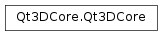

Qt3DCore¶
Synopsis¶
Static functions¶
- def
qHash(id[, seed=0]) - def
qIdForNode(node)
Detailed Description¶
Contains classes that are the foundation for Qt 3D simulation framework, as well as classes that provide the ability to render using the Qt 3D framework.
-
PySide2.Qt3DCore.Qt3DCore.ChangeFlag¶ The types of change that can be sent and received by Qt3D’s change notification system.
Constant Description Qt3DCore.NodeCreated A new instance of a QNodesubclass has been created.Qt3DCore.NodeDeleted A QNodehas been deleted.Qt3DCore.PropertyUpdated A QNodeproperty has been updated.Qt3DCore.PropertyValueAdded A QNodehas been added to the scene.Qt3DCore.PropertyValueRemoved A QNodehas been removed from the scene.Qt3DCore.CommandRequested A QNodeCommandhas been sent between a node and its backend.Qt3DCore.ComponentAdded A QComponenthas been added to aQEntity.Qt3DCore.ComponentRemoved A QComponenthas been removed from aQEntity.Qt3DCore.CallbackTriggered A QNodetriggered a callback.Qt3DCore.AllChanges Allows an observer to monitor for any of the above changes.
-
static
PySide2.Qt3DCore.Qt3DCore.qHash(id[, seed=0])¶ Parameters: - id –
PySide2.Qt3DCore.Qt3DCore::QNodeId - seed –
PySide2.QtCore.uint
Return type: PySide2.QtCore.uintReturns hash of node with
idand optionalseed.- id –
-
static
PySide2.Qt3DCore.Qt3DCore.qIdForNode(node)¶ Parameters: node – PySide2.Qt3DCore.Qt3DCore::QNodeReturn type: PySide2.Qt3DCore.Qt3DCore::QNodeIdReturns node id for
node.
© 2018 The Qt Company Ltd. Documentation contributions included herein are the copyrights of their respective owners. The documentation provided herein is licensed under the terms of the GNU Free Documentation License version 1.3 as published by the Free Software Foundation. Qt and respective logos are trademarks of The Qt Company Ltd. in Finland and/or other countries worldwide. All other trademarks are property of their respective owners.